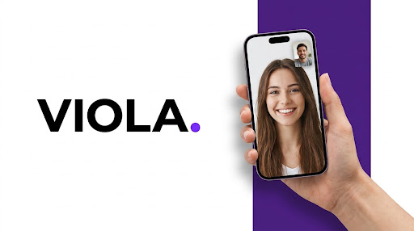

Viola Walk Home – Strategia 2026
Campagna Multicanale E Posizionamento Per L'App Di Sicurezza Femminile

Visualizza La Strategia Completa In Formato Esecutivo
Disponibile il documento completo con matrici di segmentazione, flussi di funnel, budget allocativo, metriche previsionali di acquisition e piano di advocacy territoriale.
La sicurezza personale diventa un valore condiviso quando la comunicazione costruisce fiducia civica ed empatia comunitaria.
Contesto
Sviluppo di un piano di marketing annuale per "Viola Walk Home", piattaforma creata per supportare la sicurezza e la serenità delle donne durante gli spostamenti quotidiani. Il focus risiede nella trasformazione di uno strumento tecnologico in un ecosistema di tutela comunitaria ad alto impatto sociale, fondato sull'ascolto autentico e sulla solidarietà tra pari.
Il mio contributo
Ricerca quantitativa sul target universitario mediante questionari, sentiment analysis, piano editoriale di brand advocacy e strategia di influencer marketing.
Approccio Metodologico e strategico
Analisi sul campo condotta tramite somministrazione di questionari mirati a un campione target, definizione delle buyer persona, creazione del funnel multicanale integrato (Social Media Awareness, Campagne Influencer etiche, Partnership territoriali).
Analisi di mercato e benchmarking
Analisi del settore Safety-Tech, con una mappatura dello scenario competitivo, dei macro-trend sociali e delle innovazioni tecnologiche di riferimento.
Ricerca quali-quantitativa
Somministrazione di un questionario semi-strutturato su un campione di giovani donne, da cui abbiamo estratto dati concreti su brand awareness, barriere all'adozione e driver di scelta, definendo personas e customer journey.
Sviluppo della strategia
Strategia digital 2026 lungo tutto il funnel: acquisizione mirata in top funnel, leve per costruire fiducia nella fase centrale e retention fondata sulla community.